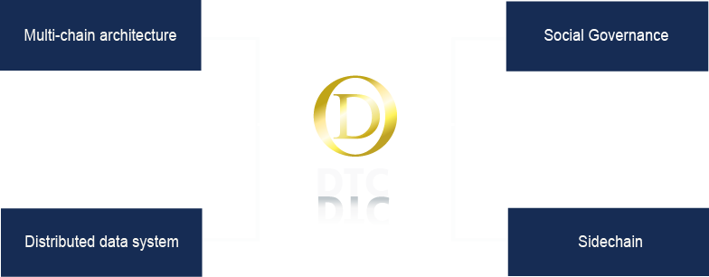
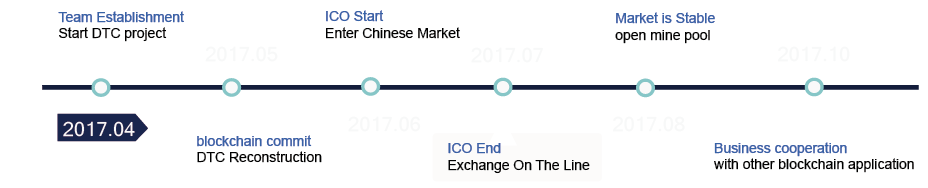

DTC's ICO will begin in Aug 7!

DTC is a block-chain technology integrated application platform, with tree-like layered, three-dimensional multi-chain architecture, while adding blockchain technology 2.0 as the core of the intelligent contract platform, distributed application of the underlying protocol and other innovative technologies. DTC will focus on the data storage, analysis and decision-making of various industries, while working with other application chain to achieve DTC transactions in various types of data and circulation in the future to become the Circulation of blockchain applications
Data analysis----DTC can be used for enterprise data decision-making, for the global small and medium enterprises to provide data sorting, analysis and decision-making. DTC can link an application through the side chain, and provide a number of data analysis, the data classification.
Data traceability----DTC can handle multiple applications in parallel because of its side chain functions or through intelligent contractual means. The unique non-modifyable records of the block chain can show all the data trajectories of the enterprise application during operation, greatly improving the product's advantages in traceability.
Identification----In the centralized system, the information is not fully transparent due to the location of the center. The block chain with natural data trajectory clear and transparent, DTC through the side chain analysis, can be a perfect solution in the enterprise application for some of the identity of the simulation scene。
Decision-tree Application----DTC based on the stored enterprise data, through the side-chain multi-level algorithm processing, can form a decision-making decision-making tree decision-making tree. On the basis of the decision tree, it can be developed with enterprise as the core of enterprise applications.

2017.04 DTC team was established，start DTC project.
2017.05 Participate in 3rd blockchain technology summit in New York
，The team discussed the options for changing the existing architecture of the DTC and adding new technologies for the regional chain
2017.06 DTC official team identified the ICO program in China, landing ICO platform
2017.07 After ICO success DTC will visit the Chinese exchange for free trade in two weeks
2017.08 In mid or late August, DTC market volatility should stabilize, open the pool
2017.10 DTC official team will work with other regional chain team to achieve the market value of DTC after October

Gavin Ellis Chief Designer
Smart Bitcoin Advocate, one of the Omni layer project sponsors. Research at the Carnegie Mellon University for distributed web-related content. With more than 10 years of programming experience. Today focused on blockchain technology and launched DTC projects with partners.
Joe Anderton Chief Designer
Joe worked for four years at MoodStock, a Silicon Valley Artificial Intelligence start-up company, as one of the heads of the company's neural data network. After the separation of the bitcoin to the central idea and block chain technology to attract, participated in a number of blockchain-related projects.

Jack Yarwood Core Developer
Bitcoin's faithful pursuer, Geeker, worked in Amazon, was responsible for the company's logistics distribution network management. After the conversion to Bitcoin, blockchain followers, in the programming has a strong talent.
John Tang Core Developer
Chinese, and Jack Yarwood's colleague. At the graduate stage, John came into contact with Bitcoin, and although he had been working in the business, he kept his research on Bitcoin in private and developed his own mining algorithm.
Mike Li Product
Many Silicon Valley companies experience, had been in the artificial intelligence company, and later removed from VC venture capital firms. Mike has a wealth of programming experience and technology venture capital concept, it is his concept to draw the development of DTC future.
" Flinkhub has helped us in taking our business from offline to online. Using Flinkhub we also took a step further and automated a lot of the processes. We were not sure how to do this before. "
" Flinkhub has helped us in taking our business from offline to online. Using Flinkhub we also took a step further and automated a lot of the processes. We were not sure how to do this before. "
" Flinkhub has helped us in taking our business from offline to online. Using Flinkhub we also took a step further and automated a lot of the processes. We were not sure how to do this before. "
" Flinkhub has helped us in taking our business from offline to online. Using Flinkhub we also took a step further and automated a lot of the processes. We were not sure how to do this before. "
" Flinkhub has helped us in taking our business from offline to online. Using Flinkhub we also took a step further and automated a lot of the processes. We were not sure how to do this before. "
" Flinkhub has helped us in taking our business from offline to online. Using Flinkhub we also took a step further and automated a lot of the processes. We were not sure how to do this before. "